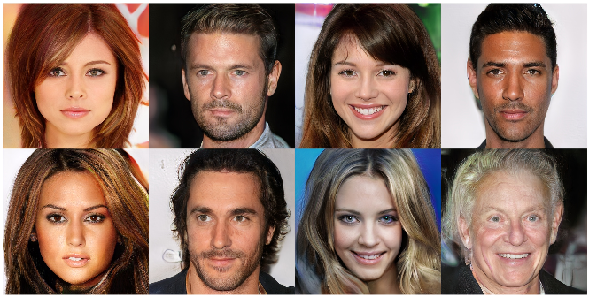
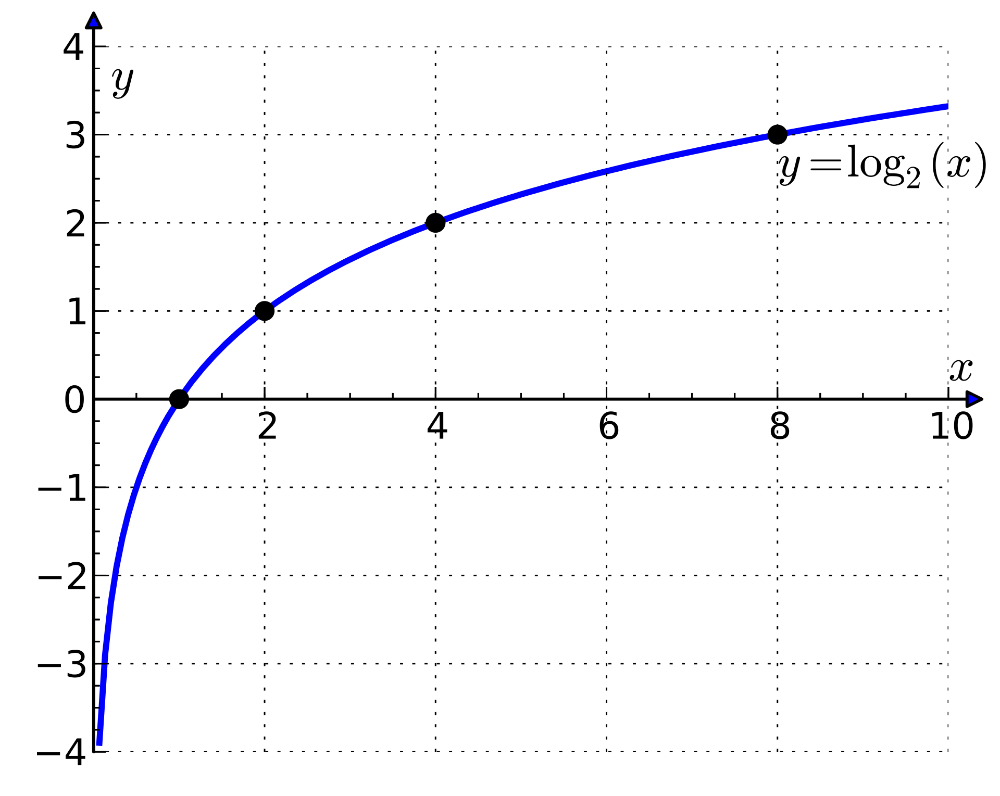
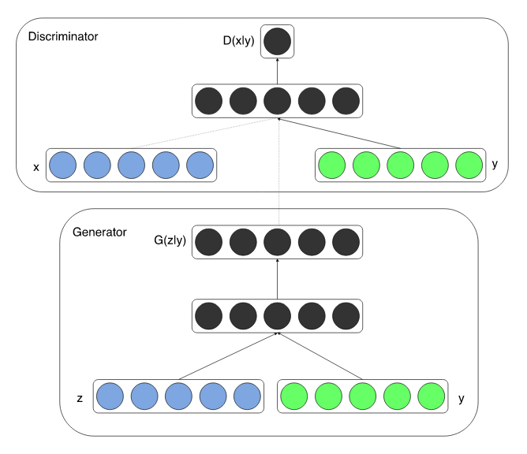
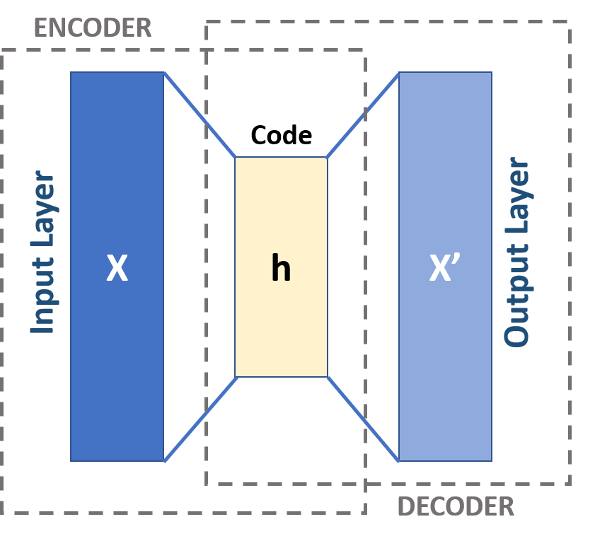
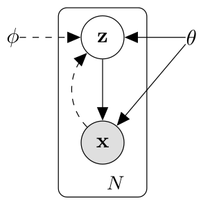

<h1> Generative models </h1> <h2> Week 7b: Generative Adversarial Networks (GANs)</h2> ### Instructor: Prof. Emre Neftci <center>https://canvas.eee.uci.edu/courses/21750</center> <center>http://tinyurl.com/nmi-lab-appointments</center> [](?print-pdf)
<h2> Generative Adversarial Networks - a brief intro </h2> <ul> <li/> A new framework for estimating generative models via an adversarial process <li /> Simultaneously train two models: <ul> <li/>a generative model G that captures the data distribution <li/>a discriminative model D that estimates the probability that a sample came from the training data rather than G </ul> </ul> <img src="img/GAN_overview.png" class=stretch />
<h2> Generative Adversarial Networks - examples </h2> List some examples here <ul> <li/> <li /> <ul> <li/> <li/> </ul> </ul> 
<h2> Generative Adversarial Networks - intuition </h2> <blockquote><p>The generative model can be thought of as analogous to a team of counterfeiters, trying to produce fake currency and use it without detection, while the discriminative model is analogous to the police, trying to detect the counterfeit currency. Competition in this game drives both teams to improve their methods until the counterfeits are indistiguishable from the genuine articles.</p> <footer>—Goodfellow, <cite>Generative Adversarial Networks</cite></footer> </blockquote> <img src="img/GAN_overview.png" class=stretch />
<h2> Generative Adversarial Networks - Some background </h2> <ul> <li/> Zero-sum game <li/> Minimax <ul> <li/> You maximize your payoff <li/> Your opponent tries to minimize your payoff </ul> <li/> Find Nash equilibrium <ul> <li/> Each player is assumed to know the equilibrium strategies of the other players, and no player has anything to gain by changing only their own strategy (source: Wikipedia) </ul> </ul>
<h2> Generative Adversarial Networks - Cost and how it works </h2> <h4>$min_G max_D V(D,G) = \mathbf{E}{x \sim p_{data}(x)} \left[ logD(x) \right] + \mathbf{E}_{z \sim p_z(z)} \left[ log(1 - D(G(z))) \right]$</h4> <ul> <li/> $D$: the probability that a sample came from the training data rather than G <li/> First equation of the right hand side <ul> <li/> Sample data $x$ from real distribution <li/> Since $x$ is sampled from real distribution, $D(x)$ should be close to 1 </ul> <li/> Second equation of the right hand side <ul> <li/> Draw a noise $z$ from distribution $P_z$ and generate data $G(z)$ <li/> $G$ want to fool $D$: Want to make D(G(z)) close to 1 </ul> <ul> <li/> D wants to maximize (as close to 0 as possible) this quantity. G wants to minimize. </ul> </ul>  <figcaption>Logarithm curve</figcaption>
<h2> Pros and Cons </h2> <ul> <li/> Pros <ul> <li/> </ul> </ul>
<h2> GAN Implementation</h2> Should I include a question? <ul> <li/> </ul> [](https://drive.google.com/open?id=1sTKjsfAJcaTTZ4y_UNlTG7Fn_HN9t77v)
<h2> Conditional GAN (cGAN) </h2> <ul> <li/> Although GANs showed successful image generation ability, there was no way to control or specify a certain type of image to generate <li/> Conditional Generative Adversarial Nets was proposed a few months later </ul> 
<h2> Implement cGAN </h2> <ul> <li/> The first cGAN simply concat additional information for conditioning </ul> <pre><code class="Python" data-trim data-noescape> class Generator(nn.Module): def __init__(self, batch, z_dim, out_shape, num_classes): super(Generator, self).__init__() self.batch_size = batch self.z_dim = z_dim self.out_shape = out_shape self.num_classes = num_classes self.fc1 = nn.Linear(z_dim+num_classes, 256) # simple concat </code></pre>
<h2> Approaches to Generative Modeling </h2> <img src="img/generative_modeling_approaches.png" class=stretch /> <p class=ref> NIPS 2016 Tutorial: Generative Adversarial Networks, Ian Goodfellow 2017 </p>
<h2> Autoencoder </h2> <ul> <li /> An Autoencoder (AE) is a neural network that is trained to copy its input to its output. <li /> AE haves two parts: an encoder $\mathbf{h} = f(\mathbf{x})$ and a decoder $\mathbf{r} = g(\mathbf{h})$  <p class=ref> By <a href="//commons.wikimedia.org/w/index.php?title=User:Michela_Massi&action=edit&redlink=1" class="new" title="User:Michela Massi (page does not exist)">Michela Massi</a> - <span class="int-own-work" lang="en"></span>, <a href="https://creativecommons.org/licenses/by-sa/4.0" title="Creative Commons Attribution-Share Alike 4.0">CC BY-SA 4.0</a>, <a href="https://commons.wikimedia.org/w/index.php?curid=80177333"></a> </p> <li /> The hidden layer activations $\mathbf{h}$ describes a <em>code</em> used to represent the input </ul>
<h2> Autoencoder </h2> <ul> <li /> AEs are designed to be unable to replicate the input perfectly, <em>e.g.</em> they cannot learn $\mathbf{x} = g(f\mathbf{x})$ exactly. <li />Instead, the capability of the AE is limited so that it learns useful properties/patterns of the data. Otherwise the network could learn $g^{-1}$ <li /> In practice, $f$ and $g$ are neural networks as we have seen so far, <em> e.g. </em> feed forward or convolutional networks. </ul>
<h2> Undercomplete AE</h2> <ul> <li/> In AE we are interested in $\mathbf{h}$, <em>i.e.</em> the output of the encoder. <li/> One way to prevent the AE to learn the identitiy function is to choose a code whose dimension is smaller than the input. This is called an undercomplete AE. <li /> Learning the undercomplete representation forces the autoencoder to capture the most salient features of the training data. This is the classical idea of "bottleneck" <li /> The loss function is: $$L(\mathbf{x}, g(f(\mathbf{x})))$$ where $L$ is typically Mean Squared Error. <li /> Undercomplete AEs are limited by the fact that the code dimension and network complexity must remain smaller than the input, <em>i.e.</em> their capacity must remain small. This prevents us from using more complex networks. </ul> [](https://drive.google.com/open?id=1doORfr4mUh-IQKwDS_p3xVTLuTrU94yz)
<h2> Regularized AE </h2> <ul> <li/> Another way to limit capacity is to use regularization <li /> Regularized AEs encourages properties other than "copying" its input, such as sparsity of the representation, smooth representations, and robustness to noise. </ul>
<h2> Example Regularized AE: Sparse AE</h2> <ul> <li/> A sparse autoencoder used a sparseness penalty, such as L1 norm. This forces many components in $\mathbf{h}$ to be zero. $$ L(\mathbf{x}, g(f(\mathbf{x}))) + \lambda \sum_i |h_i| $$ <li /> There is a loose connection with log-likelihoods optimization: $$ \begin{split} p(\mathbf{x}) &= \sum_\mathbf{h} p(\mathbf{x},\mathbf{h})\\ p(\mathbf{x},\mathbf{h}) & = p(\mathbf{x}|\mathbf{h})p(\mathbf{h})\\ \log p(\mathbf{x},\mathbf{h}) & = \log p(\mathbf{x}|\mathbf{h}) + \log p(\mathbf{h})\\ \end{split} $$ such that the regularizing term is a prior on $\mathbf{h}$. In this case, the prior distribution is a Laplace prior $$ p(h_i) = \frac{\lambda}{2} \exp(\lambda |h_i|) $$ </ul>
<h2> Denoising Autoencoder </h2> <ul> <li/> Another way to reduce capacity is to add noise to the data (<em> dropout </em>) <li/> A denoising autoencoder (DAE) instead minimizes $$ L(\mathbf{x}, g(f(\mathbf{\tilde{x}}))) $$ where $\tilde{\mathbf{x}}$ is a copy of $\mathbf{x}$ that has been corrupted by some form of noise. <li /> The noise can be simply additive Gaussian noise <img src="img/denoising_ae_example.png" class=small /> <li /> Denoising training forces $\mathbf{f}$ and $\mathbf{g}$ to learn the structure of the input $\mathbf{x}$ </ul>
<h2> In-class Assignment: Improve AE</h2> - Using a technique of your choice (regularization, noise, sparsity), try to improve the reconstruction quality on test data. - Use a visualization of your choice (PCA, ICA, t-SNE) to visualize the latent space. - Extra: Use convolutional and transposed convulational layers to implement a convolutional AE <pre><code class="Python" data-trim data-noescape> nn.ConvTranspose2d(16, 1, 2, stride=2) </code></pre>
<h2>Stochastic Encoders and Decoders </h2> <ul> <li /> AEs are typically described in the probabilistic domain, using probabilistic encoders $q_{enc}(\mathbf{h}|\mathbf{x})$ and decoder $p_{dec}(\mathbf{x}|\mathbf{h})$ <img src="img/goodfellow_14_2.png" class=normal /> <li /> Given a hidden code $\mathbf{h}$, we may think of the decoder as providing a conditional distribution $p_{dec}(\mathbf{x}|\mathbf{h})$. We may then train the autoencoder by minimizing $-\log p_{dec}(\mathbf{x}|\mathbf{h})$. </ul>
<h2> Denoising Autoencoder using Stochastic Encoders and Decoders </h2> <ul> <li/> Images are corrupted by noise: $C(\tilde{\mathbf{x}}|\mathbf{x})$ . <img src="img/denoising_ae_graph.png" /> <ol> <li /> Sample $\mathbf{x}$ from training distribution <li /> Sample a corrupted version $\tilde{\mathbf{x}}$ from $C(\tilde{\mathbf{x}}|\mathbf{x})$ <li /> Use pair $(\tilde{\mathbf{x}},\mathbf{x})$ to evaluate $L$ $$ L = \log p_{decoder}(\mathbf{x}|\mathbf{h}(\tilde{\mathbf{x}}))$$ </ol> </ul>
<h2> Learning Manifolds </h3> <ul> <li /> AEs exploit the idea that data concentrates around a low-dimensional manifold <li /> The AE specializes to representing variations that are needed to construct the training samples <li /> For example, the space of vertical translations is 1D, which defines a line (here the activations are projected on the 2 principal components) <img src="img/manifold_learning.png" c/> </ul>
<h2> Generative Models </h2> <ul> <li /> In high dimensional spaces, many vectors $\mathbf{x}$ result in $p(\mathbf{x})$ that vanish. It is more useful to focus around points that are likely. <li /> For example, if we wish to estimate the half of a digit, it would be very helpful to first decide which digit to draw. The digit forms the <em> latent variable </em> (code), which we called $\mathbf{z}$. <img src="img/Samples-drawn-from-the-prediction-of-the-lower-half-of-the-MNIST-test-data-digits-based.png" class=small /> <li /> For this, we need to create a relationshop between $\mathbf{z}$ and $\mathbf{x}$. This means we aim to maximize $p(x)$ for every $\mathbf{x}$ in the dataset, <em> i.e. </em> $$ p(\mathbf{x}) = \int_\mathbf{z} p(\mathbf{x}|\mathbf{z}) p(\mathbf{z}) \mathrm{d}\mathbf{z} $$ where $\mathbf{z}$ is a latent variable <li /> There are two challenges: how to decide on $\mathbf{z}$, and how to perform the integral. </ul>
<h2> Variational AE (VAE) </h2> <ul> <li /> Variational Autoencoders were proposed as approximate but fast algorithms to maximizing $p(\mathbf{x})$ <li /> VAEs assert that $\mathbf{z}$ are drawn from a simple distribution, such as a multivariate Gaussian $N(0,\mathbb{I})$. <li /> How can this $\mathbf{z}$ be powerful enough? Given a random varaible with one distribution, it is possible to create any other distribution provided a complex enough function. <img src="img/from_gaussian_to_arbitrary.png"> <p class=ref>Doersch, 2016, <em>Tutorial on Variational Autoencoders</em> </p> <li /> So from independent Gaussian-distributed variables, we can obtain any latent variable distribution, which can then be mapped to $\mathbf{x}$ using a some function $f$. </ul>
<h2> Variational AE (VAE) </h2> <ul> <li/> VAEs use a Gaussian distribution in $p(\mathbf{x}|\mathbf{z})$, $$ p(\mathbf{x}) = \int_\mathbf{z} N(\mathbf{x}|f_\theta(\mathbf{z}), \sigma^2 \mathbb{I}) p(\mathbf{z}) \mathrm{d}\mathbf{z} = \mathbb{E}_{z\sim p} N(\mathbf{x}|f_\theta(\mathbf{z}), \sigma^2 \mathbb{I})$$ (but any density that can be computed and differentiable with respect to the parameters $\theta$.) <li /> Unfortunately, many samples $\mathbf{z}$ are required to estimate $p(\mathbf{x})$. VAEs solve this problem by restricting the integral to values of $\mathbf{z}$ that are likely to have produced $\mathbf{x}$. This is achieved by using a density $q(\mathbf{z}|\mathbf{x})$ to produce $\mathbf{z}$. $$ p(\mathbf{x}) = \mathbb{E}_{\mathbf{z}\sim q} p(\mathbf{x}|\mathbf{z})$$ </ul>
<h2> Variational Lower Bound </h2> <ul> <li /> What is the relationship between $\mathbb{E}_{z\sim q} p(\mathbf{x}|\mathbf{z})$ and $p(\mathbf{x})$? <li /> The following relation, known as Variational lower bound is the cornerstone of all ariational Bayes: $$ \log p(\mathbf{x}) \ge \mathbb{E}_{\mathbf{z}\sim q} \log p(\mathbf{x}|\mathbf{z}) - KL(q(\mathbf{z}||\mathbf{x})|p(\mathbf{z})) $$ <li /> By maximizing the right hand side, we optimize $\log p(\mathbf{x})$ </ul>
<h2> Optimizing the Variational Lower Bound </h2> $$ \text{ Variational Lower Bound: } \mathbb{E}_{\mathbf{z}\sim q} \log p(\mathbf{x}|\mathbf{z}) - KL(q(\mathbf{z}||\mathbf{x})|p(\mathbf{z})) $$ <ul> <li /> Right term: we need to choose $q(\mathbf{z}|\mathbf{x})$. Typically, it is a Gaussian distribution $N(\mathbf{z}| \mu(\mathbf{x},\theta), \Sigma(\mathbf{x},\theta))$, where $\mu$ and $\Sigma$ are implemented using neural networks. With this choice, the right term can be computed in closed form. <li /> Left term: We could evaluate it by sampling $\mathbf{z}$ and averaging them. But this is expensive. The solution is to take a "single sample average". <li /> We now have: $$ \log p(\mathbf{x}|\mathbf{z}) - KL(q(\mathbf{z}||\mathbf{x})|p(\mathbf{z})) $$ </ul>
<h2> Reparametrization Trick</h2> $$ \log p(\mathbf{x}|\mathbf{z}) - KL(q(\mathbf{z}||\mathbf{x})|p(\mathbf{z})) $$ <ul> <li /> But there is a problem: we also need to optimize $q$, which was used to <em>sample </em> $\mathbf{z}$. Stochastic gradient descent cannot deal with stochastic variables (stochastic samples are not differentiable). The trick is to sample $\mathbf{z}$ as follows: $$ z = \mu(\mathbf{x}) + \Sigma^{\frac12}(\mathbf{x})\odot \omega $$ where $\omega \sim N(0,\mathbb{I})$. This trick only works for certain distributions! </ul>
<h2> Variational AE (VAE) Summary </h2> <ul> <li /> Variational Autoencoders were proposed as approximate but fast algorithms to maximizing $p(\mathbf{x})$. With generative adversarial networks, they are the current state-of-the-art for generative modeling. <li /> As in AEs, VAEs consist in an encoder and a decoder function, both of which are neural networks. <li /> The code $\mathbf{z}$ is a random variable. <ul> <li /> Encoder $q_\phi(\mathbf{z}|\mathbf{x})$ is typically a gaussian probability density (dashed). <li /> Decoder $p_\theta(\mathbf{x}|\mathbf{z})$ (solid) is a likelihood function of choice (Bernouilli, Multinomial, Gaussian etc.)  </ul> </ul>
<h2> Variational AE (VAE) Architecture </h2> <ul> <li /> $p_\theta(\mathbf{x}|\mathbf{z})$ is a neural network taking inputs $\mathbf{z}$ and producing image <li /> $q_\phi(\mathbf{z}|\mathbf{x})$ is a neural network producing $\mu(\mathbf{x}) $ and $\mathbf{\Sigma}(\mathbf{x})$ <li /> $\mathbf{z}$ is created using the reparamerization trick $\mathbf{z} = \mu(\mathbf{x}) + \Sigma^{\frac12}(\mathbf{x})\odot \omega $ <img src="https://miro.medium.com/max/3374/1*22cSCfmktNIwH5m__u2ffA.png" /> </ul>
<h2> Variational AE (VAE) Implementation </h2> <ul> <li /> The loss function to evaluate is: $$ \log p(\mathbf{x}|\mathbf{z}) - KL(q(\mathbf{z}||\mathbf{x})|p(\mathbf{z})) $$ <ul> <li /> $ KL(q(\mathbf{z}||\mathbf{x})|p(\mathbf{z})) = KL(N(\mathbf{z}| \mu(\mathbf{x},\theta), \Sigma(\mathbf{x},\theta))||N(0,\mathbb{I}))$. The KL divergence between two Gaussians can be computed analytically. <li /> $\log p(\mathbf{x}|\mathbf{z})$, i.e. what is the likelihood of the true data $\mathbf{x}$ given $\mathbf{z}$? This depends on the likelihood function $p(\mathbf{x}|\mathbf{z})$ <ul> <li />Binary Data $\sim$ Bernouilli distribution: Binary cross entropy loss. <li />Categorical Data $\sim$ Multinomial distribution: Cross entropy loss. <li />Real Data $\sim$ Gaussian Density: Mean-Squared Error loss. </ul> </ul> </ul> [](https://drive.google.com/open?id=1Yh1qtakIrsukG_CYr86obSQiLhD3Gw9K)
<h2> Sources </h2> <ul> <li /> Generative Adversarial Networks: <a href="https://arxiv.org/abs/1406.2661">Goodfellow et al., 2014</a> <li /> Conditional Generative Adversarial Nets: <a href="https://arxiv.org/abs/1411.1784">Mehdi Mirza and Simon Osindero, 2014</a> </ul>